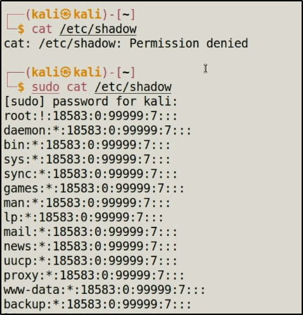

cat /etc/shadow
sudo cat /etc/shadow

if we want to run kali as root
sudo su -
IMP: don't run root if it is not necessorary . if you need prevellage the use sudo . some time sudo don't work then only you can use root .